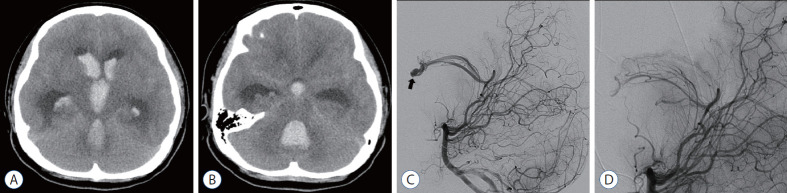
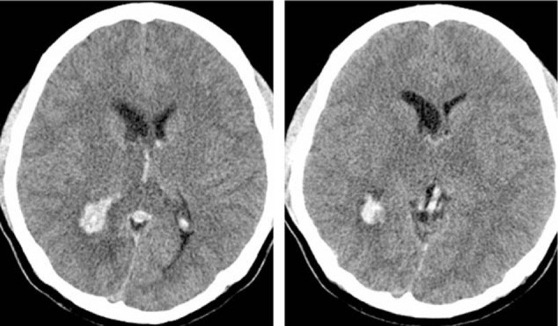
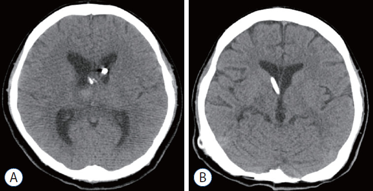

3034 — Chảy máu não thất (IVH) & não úng thủy sau xuất huyết: Graeb 0–12, mGS 0–32, CLEAR III và ngưỡng đặt shunt
Tags: pattern:chay-mau-nao-that pattern:gian-nao-that pattern:nao-ung-thuy-sau-xuat-huyet vung:nao-that score:Graeb score:mGS score:IVH-score protocol:CT-so-nao protocol:EVD protocol:rua-nao-that
Mức chắc chắn (certainty): tổng hợp y văn (literature synthesis) — ghép RCT CLEAR III (PMC6108339), meta-analysis IVF 19 nghiên cứu/1.020 ca (PMC7012971), so sánh nội soi rửa não thất vs EVD (PMC13320334), nhiễm trùng EVD (PMC12819451), Graeb/mGS/IVH score (PMC12839113, PMC13458277, PMC11568315, PMC9028147), review não úng thủy sau IVH (PMC12399821) và 3 ca có ảnh CT (PMC8918245, PMC4956778).
Câu hỏi thực hành: nam 58 tuổi, tăng huyết áp, đột ngột hôn mê, CT sọ thấy máu lấp cả hai não thất bên + não thất IV căng tròn. Người trực hỏi: chấm điểm gì, có đặt EVD không, có bơm rt-PA vào não thất không, và khi nào phải đặt shunt vĩnh viễn? Bài chốt theo ba trục: (1) đo mức máu — Graeb 0–12 cho thấy máu nhiều hay ít, mGS 0–32 cho thấy máu còn đang chảy hay đã đông, IVH score 0–23 gộp cả não úng thủy; (2) giải áp — EVD khi có giãn não thất cấp/GCS ≤ 8/não thất IV bị đúc khuôn, rửa não thất (IVF/nội soi) không cải thiện chức năng dù giảm tử vong (CLEAR III); (3) shunt — chỉ khi cai EVD thất bại, và nội soi rửa não thất giảm shunt 13% vs 26%. Nối 212 – Xuất huyết nội sọ, 218 – Thoát vị não & não úng thủy, 3032 – iNPH, 216 – Huyết khối tĩnh mạch não.
1. Tổng quan bệnh học – cơ chế hình ảnh: vì sao máu trong não thất vừa chèn ép vừa làm hỏng hấp thu dịch
- Hai cơ chế song song, không thay thế nhau:
- Tắc nghẽn cơ học (obstructive): cục máu đông bít lỗ Monro → não thất bên giãn, bít cống Sylvius/não thất IV → giãn ngược dòng nhanh; đây là lý do não thất IV bị đúc khuôn (cast) là cấp cứu, vì nó vừa tắc dòng ra vừa chèn ép thân não.
- Hỏng hấp thu (communicating): hồng cầu ly giải → hemoglobin, sắt, heme → stress oxy hóa và ferroptosis; thrombin và TGF-β1 gây xơ hóa màng nhện/hạt màng nhện và tổn thương biểu mô não thất → sau nhiều tuần não thất vẫn giãn dù máu đã tan (PMC12399821).
- Vì sao máu cấp sáng trên CT: hemoglobin chứa sắt hấp thụ tia X mạnh; máu tụ cấp điển hình 50–80 HU, trong khi dịch não tủy 0–15 HU → chênh ≥ 35 HU nên nhìn thấy rõ ngay cả khi lượng máu ít. Khi cục máu co lại và ly giải, tỷ trọng giảm dần nên mức máu–dịch (blood–CSF level) là dấu hiệu của máu đang lắng, không phải máu mới.
- Vì sao MRI khác CT: chuỗi deoxyhemoglobin (T2 tối), methemoglobin (T1 sáng), hemosiderin (SWI blooming) giúp phân biệt máu cũ – máu mới khi CT đã đồng tỷ trọng; DWI/ADC phát hiện nhồi máu biểu mô quanh não thất do chèn ép.
- Tần suất và tiên lượng (số phải nhớ):
- IVH xuất hiện ở 30–45% ca xuất huyết nội sọ (PMC13458277); IVH nguyên phát chỉ ~3% ca xuất huyết nội sọ tự phát (PMC12883228).
- Tử vong chung ~50% ở IVH nặng — con số mở đầu của CLEAR III (PMC6108339).
- Thang điểm: Graeb gốc 0–12; modified Graeb (mGS) 0–32; IVH score 0–23 = 3×(thất phải + thất trái) + thất III + thất IV + 3×não úng thủy (1/0) (PMC12839113).
- Điểm càng cao, chết càng nhiều: theo thang vị trí IVH (ITS), tử vong 30 ngày 0,9% ở điểm 0 và 90,6% ở điểm 9 (PMC13458277).
- mGS dự báo não úng thủy cấp: mỗi 1 điểm mGS → OR 1,362 (1,286–1,548); nhóm có não úng thủy có mGS trung vị 20 (14–23) so với 0 (0–3) ở nhóm không; mô hình AUC 0,974–0,981 (PMC11568315).
- Ngưỡng giãn não thất trên CT: Evans > 0,3; sừng trán > 45 mm; não thất III > 6 mm; não thất IV > 12 mm (PMC13458277).
2. Mẫu hình + chẩn đoán phân biệt theo vị trí (gamut)
- Mẫu hình cốt lõi: hôn mê/giảm tri giác sau đột quỵ hoặc chấn thương + máu trong não thất, thường kèm giãn não thất và đau đầu, nôn, rối loạn ý thức tiến triển.
- Gamut theo khoang bị lấp:
- Chỉ não thất bên — thường do xuất huyết đồi thị/hạch nền lan vào; ít chèn ép thân não nhưng dễ tắc lỗ Monro.
- Não thất III + hai thất bên — tắc lỗ Monro/cống; giãn nhanh trong vài giờ.
- Não thất IV đúc khuôn — chèn ép thân não + tắc dòng ra, tử vong nhanh nếu không giải áp; đây là hình thái không được bỏ trên lát cắt ngang dày.
- Máu lan vào khoang dưới nhện kèm IVH — vỡ phình/AVM; phải tìm phình trên CTA.
- Gamut theo nguyên nhân (5 nhóm chính):
- Tăng huyết áp (đồi thị, hạch nền → lan não thất) — hay gặp nhất ở người lớn.
- Vỡ phình/SAH — IVH kèm máu khoang dưới nhện, modified Fisher cao.
- Huyết khối tĩnh mạch não (CVST) — đồi thị giảm tỷ trọng hai bên, tĩnh mạch Galen/xoang thẳng tăng tỷ trọng, nhồi máu đồi thị; dễ bị gọi nhầm là “IVH nguyên phát”.
- AVM/dị dạng mạch — thấy nidus/tĩnh mạch giãn trên CTA/DSA.
- Rối loạn đông máu/kháng đông, chấn thương, u — không có nguyên nhân mạch máu trên CTA thì phải hỏi INR/DOAC/tiểu cầu và tiền sử chấn thương.
- Mnemonic “IVH–5T”: Thalamic (tăng huyết áp), Tear (phình/AVM vỡ), Thrombosis (CVST), Trauma, Thinners (kháng đông/rối loạn đông máu).

A–B: CT không cản quang — máu trong não thất bên, não thất IV căng tròn chèn ép thân não (mũi tên nhìn thấy trên B). C–D: DSA xác định nidus AVM trong não thất — nguyên nhân gốc. Nguồn: J Korean Neurosurg Soc 2022 (PMC8918245), CC BY-NC 4.0.3. Bảng so sánh phân biệt (ma trận đối chiếu)
| Thực thể (entity) | Hình ảnh điển hình (CT/MRI) | Chốt vào (rule-in) | Chốt loại (rule-out) | Gợi ý xác nhận |
|---|---|---|---|---|
| IVH do tăng huyết áp | Ổ máu đồi thị/hạch nền lan vào não thất; máu trong thất bên cùng bên; não thất giãn | Ổ máu nhu mô ≥ 1 cm kèm IVH + tăng huyết áp + không phình trên CTA | Không có ổ máu nhu mô + máu đối xứng hai thất + đồi thị giảm tỷ trọng → nghĩ CVST | CT sọ, CTA; kiểm huyết áp, thuốc kháng đông |
| IVH do vỡ phình (aSAH) | Máu khoang dưới nhện dày + IVH; phình trên CTA; giãn não thất sớm | Máu dưới nhện + phình + giãn não thất cấp | Không phình trên CTA chất lượng tốt + không máu dưới nhện → loại | CTA bắt buộc; DSA nếu CTA âm mà nghi cao |
| IVH do CVST | Đồi thị giảm tỷ trọng hai bên, tĩnh mạch Galen/xoang thẳng tăng tỷ trọng, IVH; MRI có phù đồi thị | Tắc xoang trên MRV/CTV + đồi thị hai bên bất thường | MRV thông toàn bộ + không phù đồi thị → loại CVST | MRV/CTV, D-dimer; kháng đông dù có IVH |
| IVH do AVM/dị dạng | Nidus/tĩnh mạch giãn cạnh não thất; máu não thất đơn thuần; có thể có nidus nhỏ | Nidus trên DSA/CTA + tuổi trẻ + không tăng huyết áp | DSA âm hoàn toàn → loại AVM lớn (còn u mạch nhỏ) | DSA là chuẩn; MRI/SWI tìm nidus |
| IVH nguyên phát (primary IVH) | Máu chỉ trong não thất, không ổ máu nhu mô; ~3% xuất huyết nội sọ tự phát | Không ổ máu nhu mô + không phình/AVM/CVST trên CTA-MRV | Có ổ máu nhu mô, phình, tắc xoang → không phải nguyên phát | CTA + MRV + xét nghiệm đông máu |
| IVH do rối loạn đông máu/kháng đông | Máu nhiều khoang, mức máu–dịch, không ổ máu điển hình; có thể tái chảy | INR > 1,5 hoặc DOAC gần đây + máu lan tỏa | INR/tiểu cầu bình thường + có nguyên nhân mạch máu → loại | INR, aPTT, tiểu cầu, anti-Xa; đảo ngược trước EVD |
| IVH sau chấn thương | Máu não thất + dập não/tụ máu dưới màng cứng/SAH chấn thương; “Traumatic Graeb” | Cơ chế chấn thương + tổn thương nhu mô/màng não kèm theo | Không cơ chế chấn thương + không tổn thương ngoài não thất → loại | CT xương sọ, CT sọ lại sau 6–24 giờ |

Hai lát cắt ngang: máu trong sừng chẩm hai não thất bên, tĩnh mạch Galen/xoang thẳng tăng tỷ trọng, và đồi thị giảm tỷ trọng đối xứng — bộ ba của huyết khối tĩnh mạch não, không phải “IVH nguyên phát”. Nguồn: Medicine (Baltimore) 2016 (PMC4956778), CC BY-NC 4.0.Ba thang điểm — chọn cái nào?
- Graeb gốc (1982, 0–12): mỗi thất bên 1–4 (1 vệt máu, 2 < ½, 3 > ½, 4 lấp đầy và giãn); thất III và thất IV 0–2 (0 không máu, 1 có máu nhưng kích thước bình thường, 2 lấp đầy và giãn). Nhanh, dùng hằng ngày; Graeb > 6/12 từng được gắn với nguy cơ não úng thủy (PMC11568315).
- modified Graeb (mGS, 0–32): chia nhỏ sừng trán/thân/sừng chẩm từng thất bên + thất III + thất IV, mỗi khoang 0–4 → nhạy hơn với máu còn tiến triển; mGS > 16/32 là ngưỡng hay gặp ở ca có não úng thủy cấp (PMC11568315).
- IVH score (2009, 0–23): gộp lượng máu + não úng thủy, dự báo tử vong và kết cục chức năng; cả ba thang có AUC 0,70–0,74 cho kết cục 12 tháng, Graeb và IVH score mạnh nhất cho shunt (PMC12839113).
4. Protocol chụp + hệ phân độ/điểm chuẩn hóa
- CT sọ không cản quang, lát ≤ 5 mm, toàn bộ não thất — chụp ngay khi nghi IVH; đo Graeb/mGS + đo não thất (Evans, sừng trán, thất III, thất IV) và ghi rõ não thất IV có bị đúc khuôn hay không.
- CTA khi có máu khoang dưới nhện, phình nghi ngờ, AVM, hoặc IVH “nguyên phát”; MRV/CTV khi đồi thị hai bên bất thường hoặc đau đầu kiểu CVST; DSA khi CTA âm nhưng nghi AVM nhỏ hoặc cần can thiệp.
- EVD (dẫn lưu não thất ra ngoài) — chỉ định: giãn não thất cấp có triệu chứng, GCS ≤ 8, não thất IV bị đúc khuôn, giãn sừng thời gian trên CT, hoặc mGS cao kèm suy giảm tri giác. Đặt lỗ Kocher (trước 10–11 cm, cách đường giữa 2–3 cm), đầu catheter 5–7 cm vào não thất bên phải; kiểm vị trí bằng CT.
- Nhiễm trùng EVD (EVDAI) — con số phải nhớ: 14% theo bệnh nhân (27/194), 12% theo catheter (27/228), trên 2.258 ngày EVD; BNI grade 4 OR 6,66 (2,04–21,68) và mỗi điểm IVH score OR 1,33 cho EVDAI (PMC12819451). Vì vậy rút EVD sớm nhất có thể và không để EVD “phòng xa” khi không còn chỉ định.
- Rửa não thất bằng rt-PA (intraventricular fibrinolysis — IVF):
- CLEAR III (n = 500): 1 mg alteplase mỗi 8 giờ, tối đa 12 liều qua EVD; mRS ≤ 3 lúc 180 ngày 48% vs 45% (RR 1,06; 0,88–1,28; p = 0,554) → không cải thiện chức năng; nhưng tử vong 18% vs 29% (HR 0,60; 0,41–0,86; p = 0,006), viêm não thất 7% vs 12%, chảy máu có triệu chứng 2% vs 2% (PMC6108339).
- Meta-analysis 19 nghiên cứu/1.020 ca: tử vong RR 0,58 (0,47–0,72), tắc EVD RR 0,41 (0,22–0,74), thời gian sạch não thất −4,05 ngày; không khác biệt về kết cục chức năng tốt (RR 1,41; 0,98–2,03) hay shunt (RR 0,93; 0,70–1,22); sau hiệu chỉnh thiên lệch công bố, chảy máu nội sọ RR 1,67 (1,01–2,74) (PMC7012971).
- Kết luận thực hành: IVF giảm chết và giảm tắc ống, không làm bệnh nhân tỉnh tốt hơn — dùng khi cục máu lớn gây tắc, không dùng đại trà.
- Nội soi rửa não thất (endoscopic lavage): so với EVD đơn thuần, giảm 66,7% khối máu trong não thất, EVD 3 vs 7 ngày, ICU 8 vs 25 ngày, shunt 13% vs 26%, mRS 0–3 lúc 90 ngày 52,1% vs 13,1% (PMC13320334) — dữ liệu quan sát, chưa có RCT lớn.
- Shunt vĩnh viễn — chỉ khi cai EVD thất bại: thử khóa EVD 24–48 giờ, theo dõi tri giác, ICP, lượng dịch não tủy/ngày và kích thước não thất trên CT; shunt khi giãn não thất tái phát có triệu chứng, không cai được, hoặc mGS cao + não thất IV từng bị đúc khuôn. ETV chỉ đặt khi não úng thủy tắc nghẽn còn thông khoang đáy; ở não úng thủy sau IVH thành công chỉ 37–45% và thất bại sớm > 30% trong 6 tháng (PMC12399821).
- Điều trị nguyên nhân song song: vỡ phình → coil/clip sớm; CVST → kháng đông dù có IVH (quyết định theo ca, nối 216); rối loạn đông máu → đảo ngược trước khi đặt EVD (nối 3025).
flowchart TD
A[CT: máu trong não thất] --> B[Chấm Graeb 0-12 và mGS 0-32 + đo não thất]
B --> C{Có giãn não thất cấp, GCS ≤ 8 hoặc não thất IV đúc khuôn?}
C -->|Có| D[Đặt EVD + đảo ngược kháng đông nếu có]
C -->|Không| E[Theo dõi sát + CT lại 6-24 giờ]
D --> F{Cục máu lớn gây tắc, mGS cao?}
F -->|Có| G[Cân nhắc IVF 1 mg alteplase mỗi 8 giờ hoặc nội soi rửa]
F -->|Không| H[Dẫn lưu đơn thuần + điều trị nguyên nhân]
G --> I[CT mỗi 24 giờ; rút EVD sớm nhất]
H --> I
I --> J{Khóa EVD 24-48 giờ: não thất còn giãn có triệu chứng?}
J -->|Có| K[Shunt vĩnh viễn hoặc ETV nếu tắc nghẽn]
J -->|Không| L[Rút EVD, theo dõi ngoại trú]
5. Biến thể bình thường và cạm bẫy
- “Máu trong não thất” không đồng nghĩa “IVH nguyên phát”: ca CVST (ảnh mục 3) có đồi thị giảm tỷ trọng + tĩnh mạch Galen tăng tỷ trọng — nếu chỉ chấm Graeb rồi đặt EVD mà không chụp MRV, bỏ sót nguyên nhân điều trị được bằng kháng đông.
- Não thất IV bị đúc khuôn dễ bỏ trên lát cắt dày: não thất IV nằm thấp, sát thân não; lát > 5 mm hoặc không dựng sagittal/coronal dễ đọc “không thấy máu” — luôn xem lại 3 bình diện và ghi rõ trong báo cáo.
- Giãn não thất do teo não (ex vacuo) không phải não úng thủy cấp: phân biệt bằng rãnh vỏ giãn theo, không có sừng thời gian căng, không có mức máu–dịch mới; đặt EVD ở ca này không giúp và tăng nhiễm trùng.
- Máu–dịch giả trên CT: đám rối mạch mạc vôi hóa, đầu catheter, khí trong não thất sau thủ thuật đều tăng/giảm tỷ trọng; so với mức ngang hoàn toàn và vị trí giải phẫu trước khi gọi IVH.
- Tự lừa bằng “EVD đã đặt là xong”: EVD không điều trị nguyên nhân và không ngăn được shunt; 14%/12% nhiễm trùng và tắc ống là lý do phải đánh giá lại chỉ định mỗi ngày.
- IVF không phải “bơm là khỏi”: CLEAR III không cải thiện mRS dù giảm tử vong; đừng hứa với gia đình “rửa não thất sẽ hồi phục chức năng”.
- Ca “bảo tồn tốt hơn mổ” có thể do chọn bệnh: nghiên cứu 40 ca báo cải thiện 90% vs 60% và tử vong 10% vs 40% ở nhóm bảo tồn (PMC12883228), nhưng nhóm mổ nặng hơn (liệt nửa người 85% vs 55%) — không dùng để trì hoãn EVD ở ca có giãn não thất cấp.
- Chấm điểm khác nhau giữa các bác sĩ: Graeb/mGS có độ đồng thuận trung bình; nên ghi rõ khoang nào bị lấp kèm điểm, và so sánh với CT trước thay vì chỉ dùng tổng điểm.
6. Tự lượng giá — Blind Quiz ngay trên trang tĩnh
Ca 1 — Nam 58 tuổi, hôn mê sau đột ngột đau đầu. Nhìn 4 ô (A–D): mô tả trước khi đọc đáp án.
- Gợi ý lâm sàng: không chấn thương, huyết áp bình thường, không dùng kháng đông.
- Câu hỏi: máu lấp khoang nào? não thất IV có bị đúc khuôn không? Graeb/mGS ước lượng? bước tiếp theo ngoài EVD là gì?
Bấm để hiện đáp án (findings + chẩn đoán)
- Dấu hiệu: A–B — máu lấp hai não thất bên và não thất IV căng tròn (đúc khuôn), giãn não thất bên; C–D — DSA có nidus AVM trong não thất với phình nội nidus.
- Chẩn đoán: IVH ồ ạt do vỡ AVM trong não thất — máu vừa tắc dòng dịch vừa chèn ép thân não.
- Điểm: Graeb cao (≈ 10–12/12) vì thất bên lấp gần đầy và thất IV căng; mGS tương ứng > 20/32.
- Xử trí: EVD giải áp + can thiệp AVM (nút/mổ); ca này còn mở sọ lấy máu não thất IV và rt-PA vào não thất (ảnh mục 6 ca 3).
- Nguồn ảnh: J Korean Neurosurg Soc 2022 (PMC8918245), CC BY-NC 4.0.
Ca 2 — Nam 24 tuổi, đau đầu và giảm trí nhớ vài ngày, CT thấy máu trong não thất. Chẩn đoán là gì?
- Câu hỏi: ngoài máu não thất còn dấu hiệu nào? vì sao không được gọi là IVH nguyên phát? xét nghiệm/hình ảnh nào chốt?
Bấm để hiện đáp án
- Dấu hiệu: máu ở sừng chẩm hai não thất bên; tĩnh mạch Galen/xoang thẳng tăng tỷ trọng; đồi thị giảm tỷ trọng đối xứng.
- Chẩn đoán: huyết khối tĩnh mạch não (CVST) gây nhồi máu đồi thị và lan máu vào não thất — không phải IVH nguyên phát.
- Chốt: MRV/CTV thấy mất dòng xoang thẳng/Galen; D-dimer; điều trị kháng đông (quyết định cá thể khi có IVH).
- Cạm bẫy: chỉ chấm Graeb rồi đặt EVD mà bỏ MRV → bỏ sót nguyên nhân điều trị được.
- Nguồn ảnh: Medicine (Baltimore) 2016 (PMC4956778), CC BY-NC 4.0.
Ca 3 — Bệnh nhân IVH nặng sau 8 liều rt-PA vào não thất; 18 tháng sau chụp lại. Hai ảnh nói gì về hiệu quả và biến chứng?

- Câu hỏi: A cho thấy gì? B cho thấy gì? vì sao vẫn phải đặt shunt dù máu đã tan?
Bấm để hiện đáp án
- A: sau 8 liều rt-PA trong 4 ngày, máu não thất gần như sạch, còn đầu catheter EVD; não thất giảm giãn.
- B: sau shunt 18 tháng, não thất kích thước bình thường, không giãn tái phát.
- Vì sao vẫn shunt: máu tan không hồi phục hấp thu dịch — xơ hóa màng nhện/hạt màng nhện do hemoglobin, thrombin, TGF-β1 (PMC12399821); nội soi rửa giảm shunt (13% vs 26%) nhưng không loại bỏ hoàn toàn (PMC13320334).
- Nguồn ảnh: J Korean Neurosurg Soc 2022 (PMC8918245), CC BY-NC 4.0.
Bài liên quan chéo
- 212 – Xuất huyết nội sọ: ICH score, spot sign, thái độ với máu tụ
- 218 – Thoát vị não & não úng thủy tắc nghẽn
- 3032 – Não úng thủy áp lực bình thường (iNPH): DESH & ngưỡng shunt
- 216 – Huyết khối tĩnh mạch não (CVST)
- 3025 – Đảo ngược kháng đông trong xuất huyết nội sọ
- 3024 – Chọc dò tủy sống quanh tiêu sợi huyết
- 201 – Protocol sọ não
Không dùng để chẩn đoán độc lập khi chưa có người hướng dẫn.